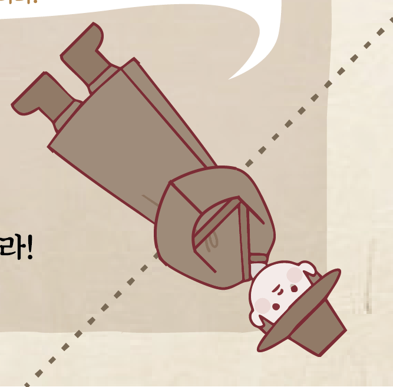

진행록의 아래 그림의 말풍선을 보시면 '허리를 숙여'인사해야 한다고 합니다.

말풍선 대로 캐릭터의 허리를 숙이게 하려면, 점선을 따라 접으면 되겠네요!
올바르게 하셨다면 QR의 나머지 반쪽을 발견하실 수 있으십니다. 이를 기존 QR과 합쳐서 스캔하시면 됩니다.
같은 장소에서 일하는 동료는 '유명한'씨였군요.
그는 박춘배가 '저승복권'을 들고 있었으며, '이승'에 가려는 모양이었던거 같다고 합니다.
유명한, 저승복권, 이승